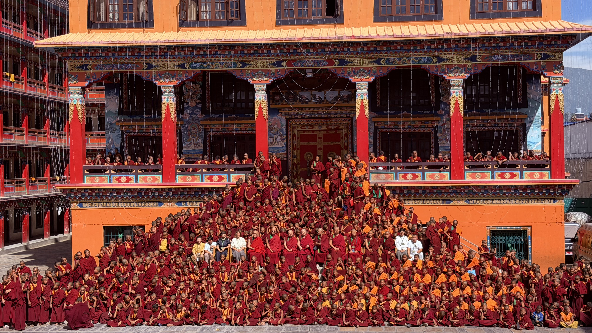

📚 शिक्षा
ज्योवो कदम्प विद्यालयमा कक्षा १० सम्म पढाइ हुन्छ। कक्षा ११ र १२ का विद्यार्थीहरूले बाहिरी विद्यालयमा अध्ययन गर्छन्।
बुद्धधर्म, आधुनिक शिक्षा र करुणाको साझा घर
Arubari, Gokarneshwor–9, Kathmandu, Nepal
काठमाडौंको अरुबारीमा अवस्थित कदम्प गुम्बामा करिब ७०० भिक्षु, भिक्षुणी तथा अन्य विद्यार्थी अध्ययन गर्छन्। यहाँ बौद्ध शिक्षा, आधुनिक शिक्षा र करुणामय जीवनलाई महत्त्व दिइन्छ।

ज्योवो कदम्प विद्यालयमा कक्षा १० सम्म पढाइ हुन्छ। कक्षा ११ र १२ का विद्यार्थीहरूले बाहिरी विद्यालयमा अध्ययन गर्छन्।
विद्यार्थीहरूका लागि शिक्षा, भोजन, आवास, वस्त्र, पुस्तक तथा आवश्यक अध्ययन सामग्री निःशुल्क उपलब्ध गराइन्छ।
कदम छोइजे फुचुङवा रिन्पोछेज्यूको मार्गदर्शनमा बौद्ध धर्म र आधुनिक शिक्षालाई सँगसँगै अघि बढाइन्छ।
कदम्पा गुम्बाको वेबसाइटमा यहाँहरूलाई हार्दिक स्वागत गर्दछु।
बुद्धधर्मको प्रज्ञा र करुणालाई जीवनमा उतार्दै सम्पूर्ण प्राणीको हितमा योगदान दिन सक्ने नयाँ पुस्ता तयार गर्नु हाम्रो मूल उद्देश्य हो। यही पवित्र अभिलाषाका साथ हामी गुम्बामा धर्म अध्ययन, आधुनिक शिक्षा र विद्यार्थीहरूको दैनिक हेरचाहलाई सँगसँगै अघि बढाउने प्रयास गरिरहेका छौँ।
सन् २०१९ मा म यहाँ आएर सेवाको जिम्मेवारी सम्हाल्दा गुम्बाभित्र औपचारिक विद्यालय शिक्षाको व्यवस्था थिएन। धार्मिक अध्ययनसँगै आधुनिक शिक्षा पनि आवश्यक छ भन्ने सोचका साथ विद्यालय शिक्षा अघि बढाउने प्रयास सुरु गर्यौँ। सन् २०२६ सम्म आइपुग्दा करिब सात वर्षको सामूहिक प्रयासले यस यात्रालाई महत्त्वपूर्ण चरणमा पुर्याएको छ।
हाल गुम्बामा करिब सात सय विद्यार्थीहरू छन्। कक्षा १० सम्मको विद्यालय शिक्षा गुम्बाभित्रै उपलब्ध छ भने कक्षा ११ र १२ का विद्यार्थीहरू बाहिरका विद्यालयमा गएर अध्ययन गरिरहेका छन्। प्रत्येक विद्यार्थीले आफ्नो पढाइलाई निरन्तरता दिन पाओस् र भविष्यका लागि आवश्यक ज्ञान, विवेक तथा क्षमता विकास गर्न सकोस् भन्ने हाम्रो चाहना हो।
हामी धर्म र आधुनिक शिक्षालाई जीवनको विकासका दुई पखेटाका रूपमा हेर्छौँ। बुद्धधर्मले करुणा, नैतिक आचरण, धैर्य र आत्मचिन्तनको मार्ग देखाउँछ। आधुनिक शिक्षाले संसारलाई बुझ्न, आफ्ना विचार स्पष्ट रूपमा व्यक्त गर्न र समाजमा जिम्मेवारीपूर्वक योगदान दिन सहयोग पुर्याउँछ। यी दुवैको समन्वयबाट विद्यार्थीहरूको जीवन अझ अर्थपूर्ण बन्न सक्छ भन्ने हाम्रो विश्वास छ।
हामी विद्यार्थीहरूले बुद्धधर्मका शिक्षाहरू अध्ययन गरून्, तिनको अर्थ मनन गरून् र दैनिक व्यवहारमा अभ्यास गरून् भन्ने चाहन्छौँ। अरूको दुःख बुझ्न सक्ने हृदय, उचित निर्णय गर्न सक्ने विवेक र आवश्यक पर्दा सहयोग गर्न अघि सर्ने भावना उनीहरूमा विकसित होस्। उनीहरूले प्राप्त गरेको ज्ञान आफ्नो उन्नतिसँगै अरूको कल्याणको आधार पनि बनोस्।
विद्यार्थीहरूको अध्ययनसँगै भोजन, वस्त्र, आवास र दैनिक हेरचाहको व्यवस्था गर्न पनि गुम्बाले आफ्नो सामर्थ्यअनुसार निरन्तर प्रयास गरिरहेको छ। उनीहरूले सुरक्षित र आत्मीय वातावरणमा बसेर पढ्न, धर्म सिक्न र आफ्नो भविष्य निर्माण गर्न पाऊन् भन्ने हाम्रो प्रतिबद्धता हो।
करिब सात सय विद्यार्थीको शिक्षा र जीवनयापनको व्यवस्था गर्नु ठूलो जिम्मेवारी हो। उपलब्ध साधन र स्रोतको सदुपयोग गर्दै उनीहरूको आवश्यकता पूरा गर्न हामी सक्दो प्रयास गरिरहेका छौँ। प्रत्येक विद्यार्थीले आफूलाई माया, मार्गदर्शन र अवसर प्राप्त भएको अनुभव गर्न सकोस् भन्ने हाम्रो चाहना छ। उनीहरूको ज्ञान, आत्मविश्वास र असल आचरणमा देखिने विकासले हामीलाई यस सेवामा निरन्तर लागिरहने प्रेरणा दिन्छ।
हाम्रा सबै प्रयासको केन्द्रमा सम्पूर्ण प्राणीको हित गर्ने भावना छ। यहाँ अध्ययन गर्ने विद्यार्थीहरूले बुद्धधर्मको मर्म बुझेर आफ्नो जीवनलाई सदाचार र करुणाले समृद्ध बनाऊन्। उनीहरू जहाँ पुगे पनि शान्ति, मैत्री र पारस्परिक सम्मान फैलाउन सकून् तथा अरूलाई कल्याणको मार्ग देखाउन सक्षम बनून् भन्ने हाम्रो अभिलाषा हो।
ज्ञानसँगै करुणा र क्षमतासँगै जिम्मेवारीको भावना विकास भएमा उनीहरूले परिवार, समुदाय र व्यापक समाजमा सकारात्मक योगदान दिन सक्छन्। एक व्यक्तिमा विकसित भएको असल सोच र आचरणले धेरैको जीवनमा राम्रो प्रभाव पार्न सक्छ। यही विश्वासका साथ हामी आजको शिक्षालाई भोलिको कल्याणसँग जोडेर हेर्छौँ।
यस यात्रामा मार्गदर्शन दिनुहुने पूजनीय गुरुजन, समर्पित शिक्षक तथा सेवा गर्ने सम्पूर्ण सदस्यहरूप्रति हार्दिक कृतज्ञता व्यक्त गर्दछु। विद्यार्थीहरूको शिक्षा, भोजन, वस्त्र र आवासका लागि सहयोग गर्नुहुने दाता तथा शुभेच्छुकहरूको सद्भाव र उदारताप्रति पनि गहिरो आभार प्रकट गर्दछु। यहाँहरूको विश्वास र साथले यो सेवा अघि बढाउन ठूलो टेवा पुर्याएको छ।
आगामी दिनहरूमा शिक्षाको गुणस्तर, धर्म अध्ययन तथा अभ्यासको वातावरण र विद्यार्थीहरूको हेरचाहलाई अझ सुदृढ बनाउँदै अघि बढ्ने हाम्रो सङ्कल्प छ। यस पुण्य यात्रामा यहाँहरूको सद्भाव, सुझाव र साथ हाम्रो लागि सधैँ मूल्यवान् रहनेछ।
हाम्रा यी प्रयासबाट आर्जित सम्पूर्ण पुण्य सबै प्राणीको सुख, शान्ति र कल्याणको कारण बनोस्। सबैको हृदयमा मैत्री र करुणा विकसित होस्। सबैले प्रज्ञा र करुणाको मार्गमा अघि बढ्दै परम बोधि प्राप्त गर्न सकून्।
हार्दिक मङ्गलमय शुभकामनासहित,
Kadam Choije Phuchungwa Rinpoche
མཚུངས་མེད་བཀའ་གདམས་ཆོས་རྗེ་རིན་པོ་ཆེ།
कदम्पा गुम्बा, काठमाडौं
A warm welcome to the Kadampa Monastery website.
Our central purpose is to nurture a new generation who can embody the wisdom and compassion of the Buddhadharma and contribute to the welfare of all sentient beings. With this aspiration, we strive to bring together Dharma study, modern education, and the daily care of our students.
When I came here and assumed responsibility for serving the monastery in 2019, there was no formal school education within the monastery. Recognizing the importance of modern education alongside religious study, we began working to establish schooling for our students. By 2026, nearly seven years of collective effort have brought meaningful progress.
Today, the monastery is home to approximately seven hundred students. School education up to Grade 10 is available within the monastery, while students in Grades 11 and 12 attend schools outside. Our wish is for every student to continue their education and develop the knowledge, discernment, and abilities they need for the future.
We regard Dharma and modern education as two wings that support a person’s growth. The Buddhadharma teaches compassion, ethical conduct, patience, and self-reflection. Modern education helps students understand the world, express their ideas clearly, and contribute responsibly to society. We believe that bringing these together can enrich their lives and give them a deeper sense of purpose.
We hope our students will study the Buddhist teachings, reflect upon their meaning, and put them into practice in everyday life. May they develop hearts that understand the suffering of others, the wisdom to make sound decisions, and the willingness to help whenever needed. May the knowledge they gain support both their own growth and the welfare of others.
Alongside their studies, the monastery strives, to the best of its ability, to provide students with food, clothing, accommodation, and daily care. We are committed to helping them learn, practise the Dharma, and build their futures in a safe and caring environment.
Providing education and daily necessities for approximately seven hundred students is a considerable responsibility. We work to meet their needs through the careful use of the resources available to us. We want every student to feel cared for, guided, and given opportunities to grow. Their progress in learning, confidence, and ethical conduct inspires us to continue this service.
At the heart of all our efforts is the aspiration to benefit all sentient beings. We hope that our students will understand the essence of the Buddhadharma and enrich their lives through ethical conduct and compassion. Wherever their journeys take them, may they promote peace, loving-kindness, and mutual respect, and help guide others towards a wholesome and meaningful life.
When knowledge is accompanied by compassion, and ability by a sense of responsibility, students can make a positive contribution to their families, communities, and wider society. The wholesome thoughts and actions of one person can touch many lives. With this conviction, we see the education we provide today as a foundation for the well-being of generations to come.
I offer my heartfelt gratitude to our revered teachers for their guidance, to our dedicated educators, and to everyone who serves the monastery. I am also deeply grateful to the donors and well-wishers who support our students’ education, meals, clothing, and accommodation. Your kindness, generosity, and trust help sustain this work.
In the years ahead, we remain committed to improving the quality of education, strengthening the environment for Dharma study and practice, and enhancing the care we provide for our students. Your goodwill, suggestions, and continued support will always be deeply valued on this shared journey.
May all the merit arising from these efforts become a cause of happiness, peace, and well-being for all sentient beings. May loving-kindness and compassion flourish in every heart. May all beings advance along the path of wisdom and compassion and ultimately attain complete enlightenment.
With heartfelt prayers and warm wishes,
Kadam Choije Phuchungwa Rinpoche
མཚུངས་མེད་བཀའ་གདམས་ཆོས་རྗེ་རིན་པོ་ཆེ།
Kadampa Monastery, Kathmandu
誠摯歡迎各位來到噶當巴寺院的網站。
我們最重要的目標，是培育能將佛法的智慧與慈悲實踐於生活、並為一切有情眾生的福祉作出貢獻的新一代。懷抱著這份願心，我們努力將佛法學習、現代教育與學生的日常照護結合在一起。
2019年，我來到寺院並承擔服務寺院的責任時，寺院內尚未設有正規學校教育。我們認識到，除了宗教學習，現代教育同樣重要，因此著手為學生建立學校教育。到了2026年，經過近七年的共同努力，我們已取得深具意義的進展。
目前寺院約有七百位學員。寺院內提供至十年級的學校教育，十一、十二年級的學生則前往外部學校就讀。我們希望每位學生都能持續求學，培養未來所需的知識、判斷力與能力。
我們認為，佛法與現代教育就像支持個人成長的兩隻翅膀。佛法教導慈悲、道德行為、忍耐與自我省察；現代教育則幫助學生理解世界、清楚表達想法，並以負責任的態度回饋社會。我們相信，兩者相輔相成，能使生命更加充實而有意義。
我們期盼學生不僅學習佛法教義，也能思惟其意涵，並將之運用於日常生活。願他們培養體察他人痛苦的心、作出妥善決定的智慧，以及在需要時主動伸出援手的意願。願所獲得的知識，不僅幫助自身成長，也成為利益他人的力量。
除了提供學習機會，寺院也在能力所及的範圍內，持續努力為學生供應飲食、衣物、住宿及日常照護。我們致力於讓他們在安全而充滿關愛的環境中學習、修持佛法，並為未來奠定基礎。
照顧約七百位學生的教育與生活所需，是一項重大的責任。我們審慎運用現有資源，盡力滿足他們的需求。我們希望每位學生都能感受到關懷、引導與成長的機會。看見他們在學習、自信和品行上的進步，正是支持我們持續投入服務的動力。
我們一切努力的核心，都是利益所有有情眾生的願心。我們希望在此求學的學生能理解佛法的精髓，以道德行為與慈悲豐富自己的生命。無論他們未來走向何方，願他們都能傳遞和平、慈愛與相互尊重，並幫助他人走向善良而有意義的人生。
當知識伴隨慈悲、能力伴隨責任感，學生就能對家庭、社區及更廣大的社會作出正面貢獻。一個人的善念與善行，能為許多生命帶來美好的影響。正因如此，我們將今天的教育視為未來世代幸福的根基。
我衷心感謝尊敬的師長給予指導、辛勤奉獻的教育工作者，以及每一位服務寺院的成員。我也深深感謝支持學生教育、餐食、衣物及住宿的捐助者與善心人士。各位的慈善、慷慨與信任，是這份工作的堅實支持。
展望未來，我們將持續提升教育品質、加強佛法學習與修持的環境，並改善對學生的照護。在這段共同前行的道路上，各位的善意、建議與持續支持，永遠是我們珍視的力量。
願所有因這些努力而累積的功德，成為一切有情眾生獲得幸福、和平與安樂之因。願慈愛與悲心在每個人心中增長。願一切眾生沿著智慧與慈悲之道前進，最終圓滿證得菩提。
謹致誠摯祈願與吉祥祝福。
Kadam Choije Phuchungwa Rinpoche
མཚུངས་མེད་བཀའ་གདམས་ཆོས་རྗེ་རིན་པོ་ཆེ།
噶當巴寺院，尼泊爾加德滿都
འགྱུར་མ་འདི་དགོན་པའི་མཁས་པས་ཞུ་དག་མཛད་དགོས། (藏文初稿，待寺院校對)
བཀའ་གདམས་དགོན་པའི་དྲ་ཚིགས་སུ་ཕེབས་པ་ཚང་མར་སྙིང་ཐག་པ་ནས་དགའ་བསུ་ཞུ།
ང་ཚོའི་དམིགས་ཡུལ་གཙོ་བོ་ནི། ནང་བསྟན་གྱི་ཤེས་རབ་དང་སྙིང་རྗེ་རང་གི་འཚོ་བའི་ནང་ལག་ལེན་བསྟར་ཞིང་། སེམས་ཅན་ཐམས་ཅད་ཀྱི་བདེ་དོན་ལ་ཕན་ཐོགས་ཐུབ་པའི་མི་རབས་གསར་པ་སྐྱེད་སྲིང་བྱ་རྒྱུ་ཡིན། དེའི་ཆེད་དུ་ང་ཚོས་དགོན་པའི་ནང་ཆོས་ཀྱི་སློབ་གཉེར་དང་། དེང་རབས་ཀྱི་ཤེས་ཡོན། སློབ་མའི་ཉིན་རེའི་ལྟ་སྐྱོང་བཅས་མཉམ་དུ་སྤེལ་བར་འབད་བཞིན་ཡོད།
༢༠༡༩ ལོར་ང་འདིར་ཡོང་ནས་དགོན་པར་ཞབས་ཞུ་ཞུ་བའི་འགན་འཁུར་སྐབས། དགོན་པའི་ནང་སློབ་གྲྭའི་དངོས་གཞིའི་ཤེས་ཡོན་གྱི་ལམ་ལུགས་མེད། ཆོས་ཀྱི་སློབ་གཉེར་དང་མཉམ་དུ་དེང་རབས་ཀྱི་ཤེས་ཡོན་ཡང་གལ་ཆེ་བར་མཐོང་སྟེ། སློབ་མ་ཚོར་སློབ་གྲྭའི་ཤེས་ཡོན་སྤྲོད་པའི་ལས་ཀ་འགོ་བཙུགས། ༢༠༢༦ ལོར་སླེབས་དུས། ལོ་བདུན་ཙམ་གྱི་མཉམ་རུབ་འབད་བརྩོན་ལ་གྲུབ་འབྲས་གལ་ཆེན་ཐོབ་ཡོད།
ད་ལྟ་དགོན་པའི་ནང་སློབ་མ་བདུན་བརྒྱ་ཙམ་ཡོད། དགོན་པའི་ནང་འཛིན་རིམ་བཅུ་པ་བར་གྱི་སློབ་གྲྭའི་ཤེས་ཡོན་སྤྲོད་ཀྱི་ཡོད་ལ། འཛིན་རིམ་བཅུ་གཅིག་པ་དང་བཅུ་གཉིས་པའི་སློབ་མ་རྣམས་ཕྱིའི་སློབ་གྲྭར་འགྲོ་བཞིན་ཡོད། སློབ་མ་རེ་རེས་སློབ་གཉེར་མུ་མཐུད་ཐུབ་པ་དང་། མ་འོངས་པར་མཁོ་བའི་ཤེས་བྱ་དང་དཔྱོད་ཤེས། ནུས་པ་བཅས་རྒྱས་པ་ནི་ང་ཚོའི་རེ་འདུན་ཡིན།
ང་ཚོས་ཆོས་དང་དེང་རབས་ཀྱི་ཤེས་ཡོན་གཉིས་མིའི་འཕེལ་རྒྱས་ལ་མཁོ་བའི་གཤོག་པ་གཉིས་ལྟ་བུར་བརྩི་གི་ཡོད། ནང་བསྟན་གྱིས་སྙིང་རྗེ་དང་། ཚུལ་ཁྲིམས། བཟོད་པ། རང་སེམས་ལ་བརྟག་དཔྱད་བྱ་བའི་ལམ་སྟོན་གནང་། དེང་རབས་ཀྱི་ཤེས་ཡོན་གྱིས་འཛམ་གླིང་ལ་གོ་རྟོགས་དང་། རང་གི་བསམ་ཚུལ་གསལ་པོར་བཤད་པ། སྤྱི་ཚོགས་ལ་འགན་འཁུར་དང་བཅས་ཕན་འདོགས་བྱ་བར་རོགས་རམ་བྱེད། གཉིས་པོ་མཉམ་སྦྱོར་བྱས་ན་སློབ་མའི་མི་ཚེ་དོན་ལྡན་དུ་འགྱུར་བར་ང་ཚོས་ཡིད་ཆེས་ཡོད།
སློབ་མ་ཚོས་སངས་རྒྱས་ཀྱི་བསྟན་པ་སྦྱངས་ཏེ། དོན་ལ་བསམ་གཞིག་དང་ཉིན་རེའི་འཚོ་བའི་ནང་ཉམས་ལེན་བྱ་ཐུབ་པར་རེ་བ་ཡོད། གཞན་གྱི་སྡུག་བསྔལ་རྟོགས་པའི་སེམས་དང་། ཐག་གཅོད་ཡང་དག་པ་བྱེད་པའི་ཤེས་རབ། དགོས་སྐབས་རོགས་རམ་བྱ་བའི་བསམ་པ་བཅས་འཕེལ་བར་ཤོག ཁོང་ཚོའི་ཤེས་ཡོན་རང་གི་འཕེལ་རྒྱས་ཙམ་མ་ཡིན་པར་གཞན་གྱི་ཕན་བདེའི་རྒྱུར་ཡང་འགྱུར་བར་ཤོག
སློབ་གཉེར་གྱི་ཁ་སྣོན་དུ། དགོན་པས་རང་གི་ནུས་ཚོད་ལྟར་སློབ་མ་ཚོར་ཟས་དང་། གོས། སྡོད་གནས། ཉིན་རེའི་ལྟ་སྐྱོང་བཅས་མཁོ་སྤྲོད་བྱ་བར་འབད་བརྩོན་བྱེད་བཞིན་ཡོད། སློབ་མ་ཚོས་བདེ་འཇགས་དང་བྱམས་བརྩེ་ལྡན་པའི་ཁོར་ཡུག་ནང་སློབ་གཉེར་དང་ཆོས་ཉམས་ལེན། མ་འོངས་པའི་འཚོ་བའི་གཞི་རྩ་འཛུགས་ཐུབ་པར་ང་ཚོས་འབད་བརྩོན་བྱེད།
སློབ་མ་བདུན་བརྒྱ་ཙམ་གྱི་ཤེས་ཡོན་དང་འཚོ་བའི་དགོས་མཁོ་སྒྲུབ་པ་ནི་འགན་འཁྲི་ཆེན་པོ་ཞིག་ཡིན། ང་ཚོས་ཡོད་པའི་ཐོན་ཁུངས་གཟབ་ནན་གྱིས་སྤྱད་དེ་ཁོང་ཚོའི་དགོས་མཁོ་སྒྲུབ་ཐབས་བྱེད། སློབ་མ་རེ་རེས་བྱམས་སྐྱོང་དང་། ལམ་སྟོན། འཕེལ་རྒྱས་ཀྱི་གོ་སྐབས་ཐོབ་པར་ཚོར་ཐུབ་པའི་རེ་བ་ཡོད། ཁོང་ཚོའི་ཤེས་ཡོན་དང་། རང་རྟོན། ཚུལ་བཟང་ལ་འཕེལ་རྒྱས་མཐོང་བ་དེས་ང་ཚོར་ཞབས་ཞུ་མུ་མཐུད་རྒྱུའི་སེམས་ཤུགས་སྦྱིན།
ང་ཚོའི་བྱ་བ་ཐམས་ཅད་ཀྱི་སྙིང་པོ་ནི་སེམས་ཅན་ཐམས་ཅད་ལ་ཕན་འདོགས་པའི་སྨོན་ལམ་ཡིན། སློབ་མ་ཚོས་ནང་བསྟན་གྱི་སྙིང་པོ་རྟོགས་ནས་ཚུལ་ཁྲིམས་དང་སྙིང་རྗེས་རང་གི་མི་ཚེ་ཕྱུག་པོར་བྱེད་པར་ཤོག གང་དུ་ཕྱིན་ཡང་ཞི་བདེ་དང་། བྱམས་པ། ཕན་ཚུན་བརྩི་བཀུར་བཅས་སྤེལ་ཞིང་། གཞན་རྣམས་ལ་དགེ་བའི་ལམ་སྟོན་ཐུབ་པར་ཤོག
ཤེས་ཡོན་ལ་སྙིང་རྗེ་དང་། ནུས་པ་ལ་འགན་འཁུར་གྱི་བསམ་པ་ལྡན་ན། སློབ་མ་ཚོས་ཁྱིམ་ཚང་དང་། སྡེ་ཚན། སྤྱི་ཚོགས་ཡོངས་ལ་ཕན་ཐོགས་བྱེད་ཐུབ། མི་གཅིག་གི་བསམ་པ་བཟང་པོ་དང་ལས་བཟང་པོས་མི་མང་པོའི་མི་ཚེ་ལ་ཕན་འབྲས་བསྐྲུན་ཐུབ། དེའི་ཕྱིར་ང་ཚོས་དེ་རིང་གི་ཤེས་ཡོན་མ་འོངས་མི་རབས་ཀྱི་བདེ་སྐྱིད་ཀྱི་གཞི་རྩར་མཐོང་གི་ཡོད།
ལམ་སྟོན་གནང་མཁན་གྱི་བླ་མ་དང་དགེ་རྒན་རྣམས། བློས་བཏང་ནས་སློབ་སྟོན་གནང་མཁན། དགོན་པར་ཞབས་ཞུ་ཞུ་མཁན་ཚང་མར་སྙིང་ཐག་པ་ནས་བཀའ་དྲིན་ཆེ་ཞུ། སློབ་མའི་ཤེས་ཡོན་དང་། ཟས། གོས། སྡོད་གནས་བཅས་ལ་རོགས་རམ་གནང་མཁན་གྱི་སྦྱིན་བདག་དང་བསམ་པ་བཟང་པོ་ཅན་ཚང་མར་ཡང་དྲིན་གཟོ་ཟབ་མོ་ཞུ། ཁྱེད་རྣམས་ཀྱི་བྱམས་སེམས་དང་། གཏོང་ཕོད། ཡིད་ཆེས་བཅས་ཀྱིས་ལས་ཀ་འདི་མུ་མཐུད་སྤེལ་བར་རྒྱབ་སྐྱོར་ཆེན་པོ་བྱས་ཡོད།
མ་འོངས་པའི་ལོ་ཟླའི་ནང་ང་ཚོས་ཤེས་ཡོན་གྱི་སྤུས་ཚད་ཇེ་ལེགས་དང་། ཆོས་སློབ་དང་ཉམས་ལེན་གྱི་ཁོར་ཡུག་ཇེ་བཟང་། སློབ་མའི་ལྟ་སྐྱོང་ཇེ་ལེགས་གཏོང་རྒྱུའི་འབད་བརྩོན་མུ་མཐུད་བྱ་རྒྱུ་ཡིན། ལས་ཀ་འདིའི་ལམ་བུར་ཁྱེད་ཚོའི་བསམ་པ་བཟང་པོ་དང་། བསམ་འཆར། རྒྱུན་མཐུད་རོགས་རམ་བཅས་ནི་རིན་ཐང་ཆེན་པོ་ཡིན།
འབད་བརྩོན་འདི་དག་ལས་བྱུང་བའི་དགེ་བའི་རྩ་བ་ཐམས་ཅད་སེམས་ཅན་ཐམས་ཅད་ཀྱི་བདེ་སྐྱིད་དང་། ཞི་བདེ། ཕན་བདེའི་རྒྱུར་འགྱུར་བར་ཤོག ཀུན་གྱི་སེམས་ལ་བྱམས་པ་དང་སྙིང་རྗེ་རྒྱས་པར་ཤོག སེམས་ཅན་ཐམས་ཅད་ཤེས་རབ་དང་སྙིང་རྗེའི་ལམ་ལ་ཞུགས་ཏེ་མཐར་བྱང་ཆུབ་རྫོགས་པ་ཐོབ་པར་ཤོག
སྙིང་ཐག་པ་ནས་སྨོན་ལམ་དང་བཀྲ་ཤིས་པའི་འཚམས་འདྲི་ཞུ།
Kadam Choije Phuchungwa Rinpoche
མཚུངས་མེད་བཀའ་གདམས་ཆོས་རྗེ་རིན་པོ་ཆེ།
བཀའ་གདམས་དགོན་པ། ཀ་ཐ་མན་གྲུ།
गुम्बाको भोजन, शिक्षा, स्वास्थ्य उपचार, वस्त्र र भवन मर्मतजस्ता आवश्यकतामा सहयोग गर्न चाहनुहुन्छ भने आधिकारिक सम्पर्कमार्फत जानकारी लिनुहोस्।